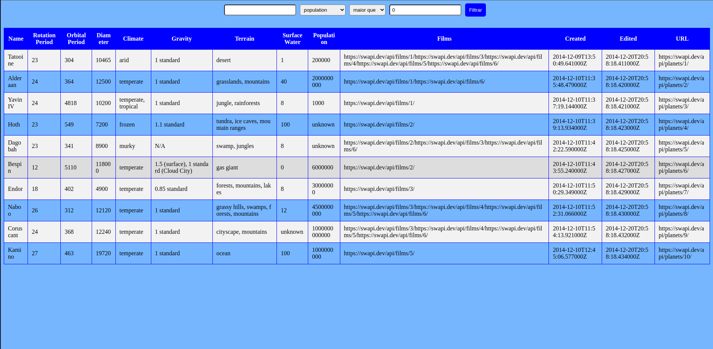

Aqui, é possível visualizar o projeto em pleno funcionamento e explorar suas principais funcionalidades por meio de printscreens e gifs. Caso deseje executar o projeto em sua própria máquina ou queira ver detalhes sobre linguagens e habilidades usadas, basta selecionar a opção "GITHUB" no menu superior, onde encontrará detalhes sobre a instalação do projeto em seu ambiente local. Lembre-se de me contar o que achou do projeto, ficarei imensamente feliz em receber o seu feedback. Ou caso tenha alguma dúvida sobre o projeto, você pode clicar em "DUVIDAS" e me mandar uma mensagem diretamente ou ir em HOME, lá você encontra todas as minhas redes sociais.
Este site é uma aplicação em React incrível que apresenta uma lista de planetas do universo de Star Wars, a qual utiliza a Context API e Hooks para controlar os estados globais. Com esta ferramenta, o usuário pode selecionar os mais diversos filtros para personalizar a sua busca, seja filtrando planetas pelo nome, população, diâmetro, entre outras opções disponíveis.
O site conta com uma única página, na qual é uma tabela com os planetas disponíveis.
A tabela conta com vários dados dos planetas como você pode ver na imagem acima. Existe também as opções de filtro, onde o usuário pode pesquisar, por exemplo, por nome:
O usuário pode fazer pesquisas mais específicas sobre os planetas, utilizando o input de opções como population, orbital_period, diameter entre outras que você pode observar abaixo:
Note também que é possível aplicar um filtro de número, onde eu posso escolher se eu quero maior que, menor que ou igual a opção escolhida. Você também pode brincar com os planetas desse sistema, caso queira conhecer a aplicação mais a fundo, volto a te convidar para conhecer o repositório do projeto no github, basta clicar aqui